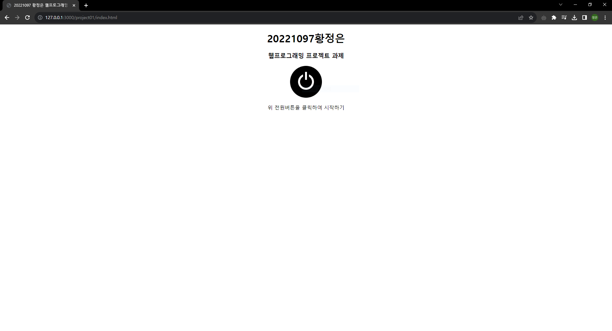
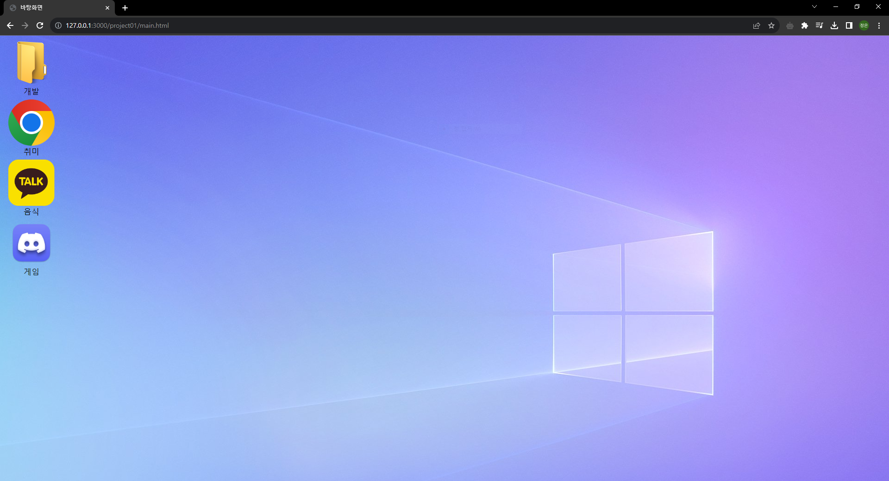
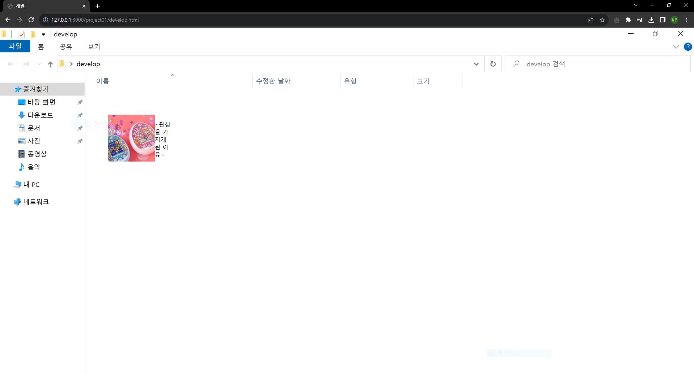

과제로 프로젝트를 진행하며 정말 많은 공부가 되었습니다. 그저 시험을 위해 교재만 가지고 외울때는 시맨틱태그를 어떻게 적용하는지, 하이퍼링크가 사진에도 적용이 되는지, 된다면 어떻게
코드를 적어야하는지 전혀 알지 못하는 채로 외우기만 할 뿐이어서 재미도없었고 제대로 이해도 못 했습니다. 과제형식이라 무조건 해야만하는게 아니었다면 저는 분명 제대로 만드려고 시도도
안해봤을겁니다. 이렇게라도 알게되어 정말 잘됐다고 생각하고 있습니다.
처음 프로젝트를 계획했을 때에는 컴퓨터에 접속한 컨셉을 가지고 가려고 했습니다. 전원버튼을 누르면 바탕화면으로 가고, 지금의 메뉴에 있는 개발, 음식, 취미 그리고 원래 하나 더 하려고
했었던 게임 까지 각 요소를 파일, 카카오톡, 디스코드, 크롬의 컨셉을 가지고 들어가면 그 화면 안에 내용이 적혀있는 식으로 하려고 했는데..

사진을 보시면 아시겠지만 첫번째 파일에서부터 망했습니다. 도저히 파일 배경화면 안에 내가 원하는 위치에 그림이 고정되지 않았습니다. 또 글씨는 왜 저렇게 딱 붙어있는건지.. ㅜㅜ
그래서 눈물을 머금고 8시간동안 머리를 쥐어뜯으며 만든 파일을 전부 갈아엎어 지금의 페이지를 만들게 되었습니다. 다행스럽게도 저 페이지를 제작하면서 공부가 많이 됐는지, 새로 만든
페이지는 그리 오래걸리지 않고 index페이지를 완성할 수 있었습니다.
처음 구상과는 많이 다르게 되어 페이지를 어떻게 제작할지를 제작하면서 고민하다보니 너무 엉성하게 제작하게 된
것 같아 속상합니다. index페이지에는 맨 위에 제 홈페이지의 이름, 바로 아래 각 상세페이지로 바로 갈 수 있는 메뉴바를 넣었습니다. 그리고 개발, 음식, 취미 페이지에 대한 가벼운
소개와 함께 관련된 사진을 배치하고, 클릭하면 상세페이지로 갈 수 있도록 구성했습니다. 각 상세페이지들은 제가 생각한 구상에서 사진이나 요소 등 보다는 글이 훨씬 많아서 글이 많은 나무위키
컨셉을 생각하면서 제작했습니다. 나름 보면서 따라하려고 노력했는데 잘 된 것 같지는 않습니다. 또 각 상세페이지 맨 위에도 스크롤해도 사라지지않고 고정되어있게 position: fixed 속성을 이용해
메뉴바를 배치해 각 상세페이지에서 다른 상세페이지로 이동할 수 있도록 구성했습니다.